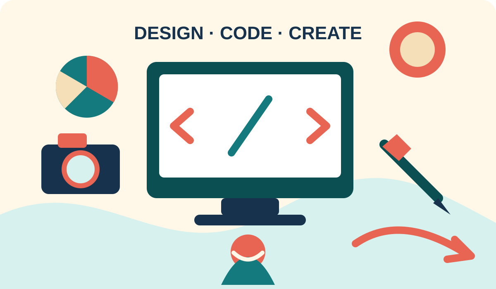

Becoming a Multimedia Designer
My goal is to become a multimedia and web designer who uses clear information, expressive color, and accessible structure. I want my projects to communicate ideas while also reflecting my identity as an artist and divergent thinker.
A Picture of My Future

Why I Selected This Image
I selected this image because it connects directly to my future as a multimedia/web designer and artist. The computer screen represents HTML and CSS, while the color wheel, camera, and drawing tools represent the different media I want to combine. The image uses the same teal-and-coral palette as the site, so the visual identity remains consistent. Its simple shapes also keep the page readable instead of competing with the written content.